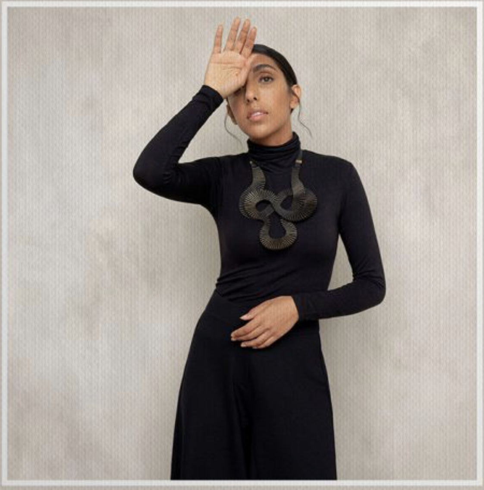

In this volume, we delve into the subject of legacy. We explore the architecture of Gio Ponti and CarloScarpa, the art Joan Miro, and the photography of Fan Ho. We spend the day with Rupi Kaur,discuss design with Jonathan Anderson, and present an autumn style edit at kettle Yard.VOL.18A/W 2019 $12
